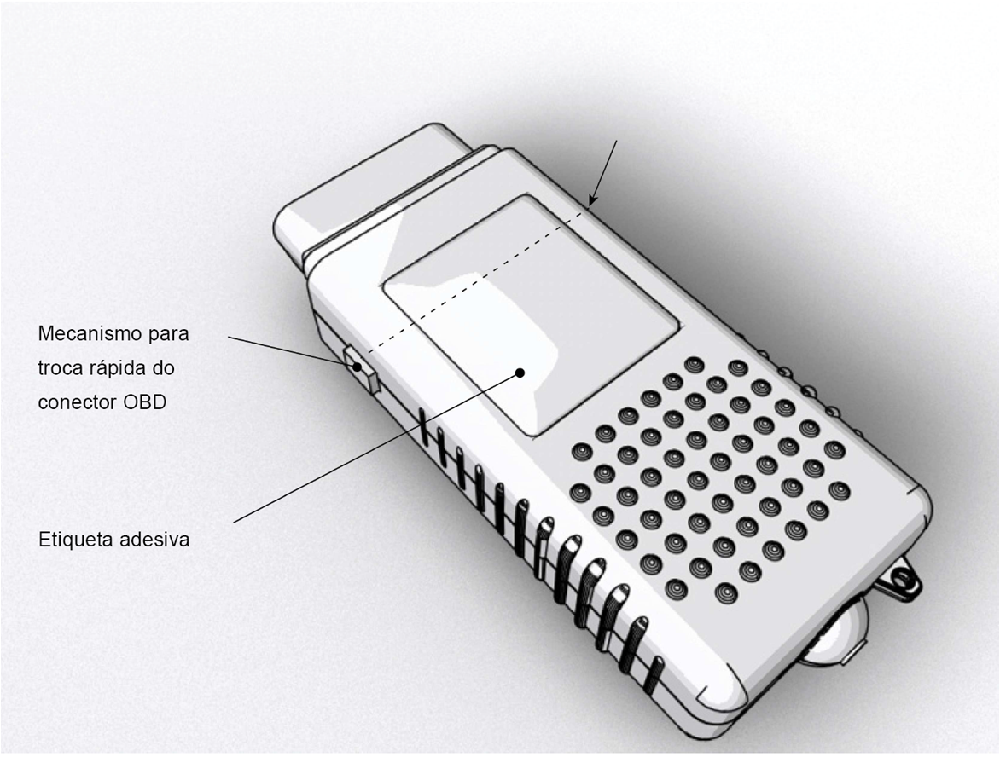
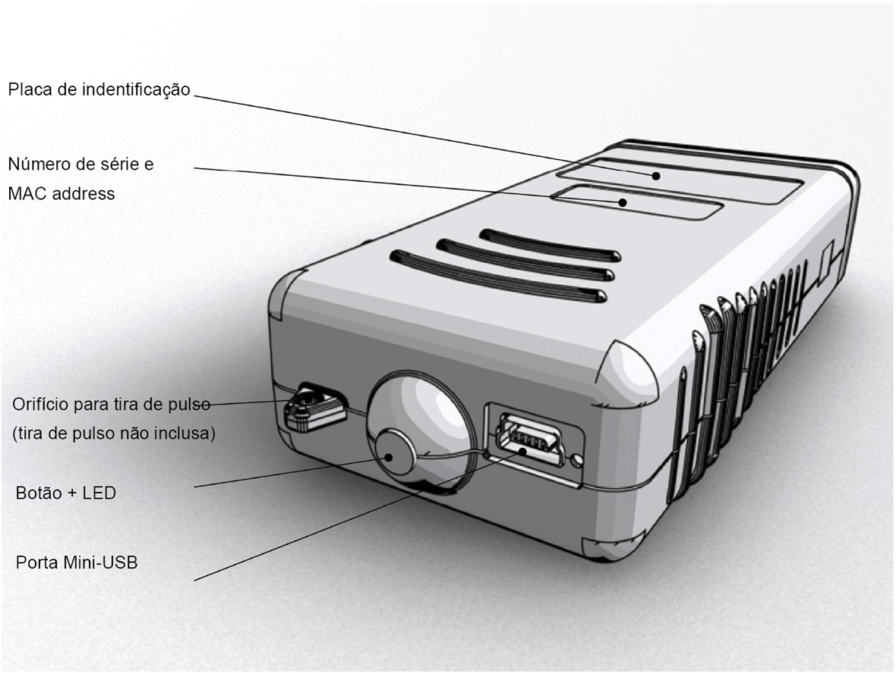
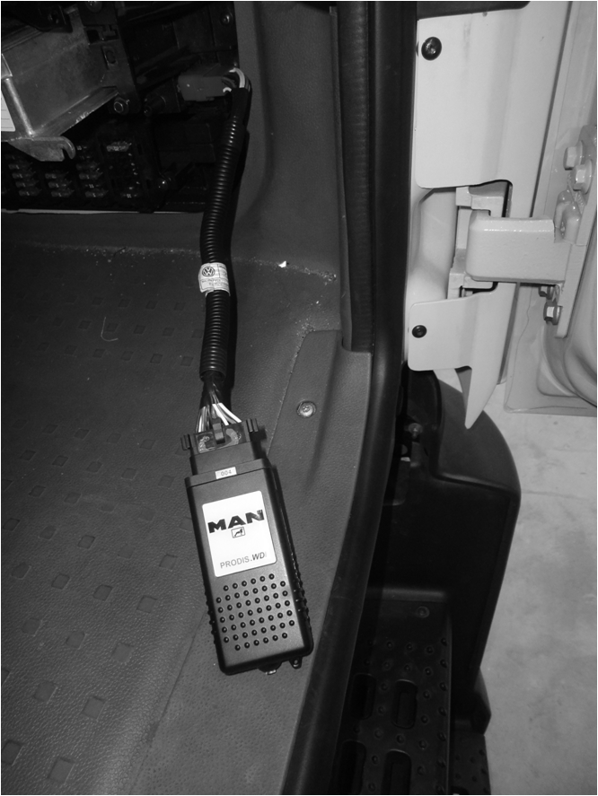
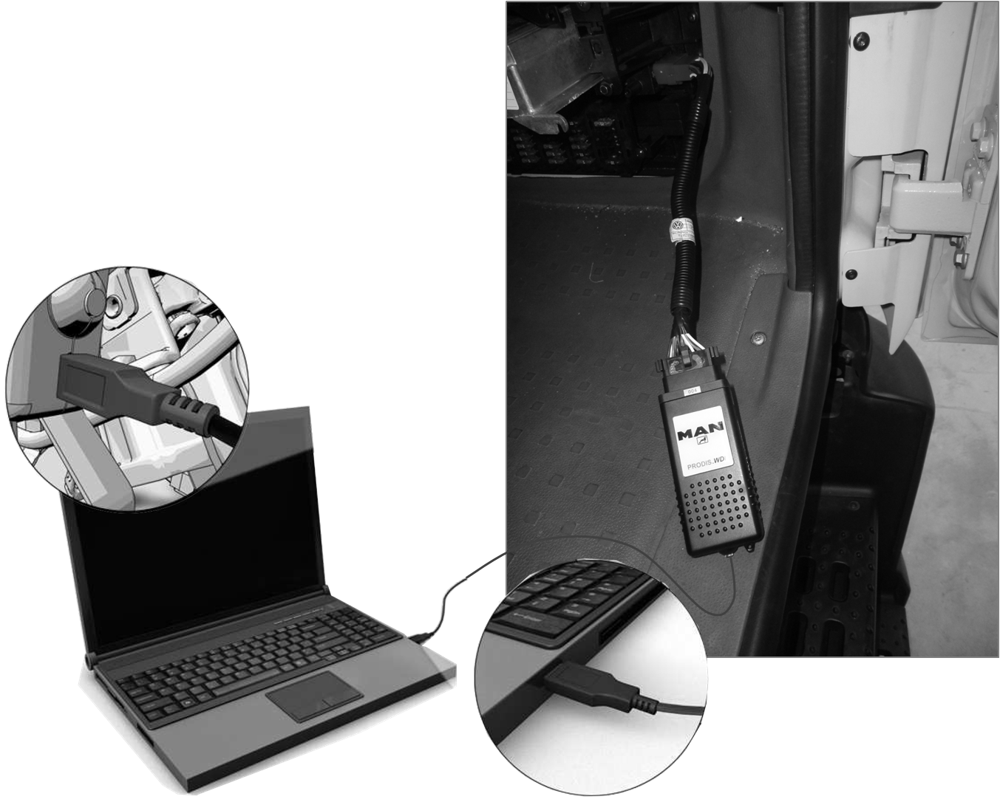
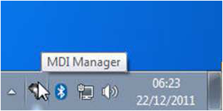
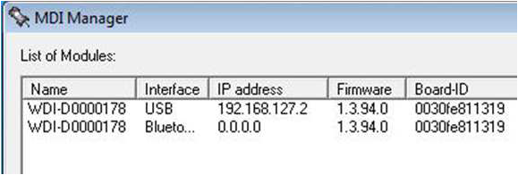
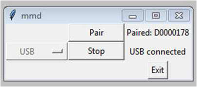
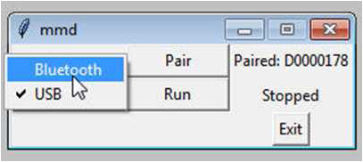

|
MCO-08
Interface
de diagnóstico Wireless (wdi).

|
Informações Importantes
  Atenção! Atenção!
• Observar as instruções de segurança e
informações importantes no capítulo 4
"Instruções Gerais de Segurança" clicando
aqui.
Manual de Inicialização
1
Descrição do Equipamento
1.1 Parte Frontal

1.2 Parte
de Trás

2 Instalação / Configuração
Antes que o equipamento possa ser usado você
precisa configurá-lo.
Para isso os seguintes passos devem ser seguidos
em sequência:
1. Cheque os pré-requisitos do sistema
2. Instale o PRODIS.RTS
3. Configure e cheque as conexões
4. Ligue o WDI
5. Pareie o WDI e o notebook
6. Execute o diagnóstico do veículo

|
Nota!
Durante a configuração, não
desconecte o equipamento da porta
USB ou da fonte de alimentação.
|
Pré-requisitos do
sistema:
· Microsoft Windows XP / Vista / Windows 7
· Módulo Bluetooth instalado
· Toshiba Bluetooth Stack
(versão 7.10.18 ou mais recente)
O equipamento vem pré-configurado. O número de
serie está impresso na etiqueta anexa na parte de
trás do equipamento.
|
2.1 Instalando o PRODIS.RTS
|
Nota!
Você precisa ter direitos de
administrador para ser capaz de
instalar o PRODIS.RTS.
|
1. Insira o CD de instalação que acompanha o
equipamento.
A rotina de instalação inicia automaticamente.
Se não iniciar, execute o arquivo
Prodis.Rts.WDI-DSA-setup.exe no CD.
2. Siga as instruções do guia de instalações.
· Aceite todas as opções padrão.
· Permita todas as solicitações do firewall.
· Sempre selecione "Rede Privada" quando um
tipo de rede for solicitado.
3. Reinicie o Windows ao final da instalação.
2.2 Configurando a
conexão
O WDI se comunica com o PC/Notebook de
diagnose através de conexão Bluetooth ou através
da interface USB de alta velocidade (USB 2.0).
Comunicação via USB
A interface USB é automaticamente instalada no
PC/Notebook de diagnose.
Comunicação via
Bluetooth
Ative o módulo Bluetooth do notebook ou
conecte
um módulo Bluetooth externo em uma porta USB se
seu notebook não estiver equipado com este
dispositivo.
|
2.3
Checando a conexão
1. Conecte o equipamento ao soquete OBD do
veículo.
Certifique-se que o veículo está conectado a
uma bateria de 24V com funcionamento
adequado.
O LED do WDI acende brevemente enquanto a
conexão é estabelecida, então apaga e acende
após poucos segundos para permanecer
aceso, indicando que o equipamento está
pronto para operação.

2. Conecte o WDI ao notebook com o cabo USB.

|
3.
Certifique-se de que o módulo Bluetooth está
habilitado.
O símbolo deve ser exibido na
barra inferior do sistema.
4. Abra o MDI Manager clicando no símbolo MDI Manager
na barra inferior do sistema.
* O MDI Manager foi instalado automaticamente
durante a instalação do PRODIS.RTS.

5. Clique em Refresh Module List e então em Add
Bluetooth Device.
Você verá uma lista de dispositivos
encontrados na rede.

|
Nota!
Sobre a lista de dispositivos no MDI
Manager:
Se o dispositivo puder se comunicar com o
notebook através de diferentes canais de
comunicação, ele aparecerá mais de uma
vez na lista de dispositivos.
Exemplo: se o equipamento estiver
conectado via USB ao notebook, e a
interface Bluetooth também estiver ativada,
o mesmo será listado com interface BT e
USB respectivamente.
|
|
Você verá o número de série do seu WDI se o
pareamento for concluído com sucesso, conforme
figura abaixo:

5. Clique em Stop para interromper a conexão USB.
6. Clique em USB e selecione Bluetooth na lista.

7. Clique em Run para estabelecer a conexão
Bluetooth.
O WDI e o notebook estão agora conectados
via Bluetooth.
Se você desconectá-los, o WDI e o notebook ainda
continuarão pareados. Para remover este
pareamento, você tem que parear o notebook com
outro WDI.
|
3.5 Fazendo o Diagnostico de um Veículo
1. Conecte o WDI ao veículo.
► ver capítulo 3.2
2. Pareie os equipamentos e estabeleça a conexão.
► ver capítulo 3.4
3. Use as teclas , e Esc para navegar no
PRODIS.RTS.
4. Faça o diagnóstico do veículo.
5. Feche o PRODIS.RTS via Iniciar ► Todos os
Programas ► PRODIS.RTS ► StopDsaRts.
6. Após o diagnóstico estar completo, desconecte
o equipamento do veículo.
|
4 Instruções Gerais de Segurança
4.1 Uso adequado
Este equipamento foi desenvolvido para permitir o
diagnóstico de unidades eletrônicas de controle de
veículos.
Qualquer outro uso é considerado impróprio e pode
resultar em danos ao operador, ao veículo e ao
próprio equipamento.
4.2 Instruções de segurança
1. A incorreta operação, configuração e reparo do
equipamento resulta em mau funcionamento,
sérios danos ao operador, ao equipamento de
teste e/ou ao veículo, e em perda de dados.
O equipamento só pode ser operado,
configurado e reparado por pessoal técnico
qualificado.
· Pessoas qualificadas para o uso do sistema são:
Pessoas que frequentaram o treinamento e
estão familiarizadas com o conteúdo do manual do
usuário.
· Reparos podem ser feitos somente por:
Pessoal que completou treinamento certificado
em engenharia elétrica, frequentou treinamento
adequado na empresa DSA e tem
conhecimento completo do conteúdo do
manual técnico e de operação.
· A respeito deste manual, somente pessoal que
frequentou treinamento da empresa DSA para
operação e configuração do equipamento e
está completamente familiarizado com o
conteúdo do manual técnico e de operação são
considerados qualificados para configurar o
equipamento.
2. No caso de dano do WDI, imediatamente
desconecte a fonte de energia. Certifique-se de
que o equipamento seja verificado o mais breve
possível por pessoal qualificado quanto à
segurança e funcionamento adequado.
3. Alguns componentes dentro do equipamento são
energizados. A carcaça do equipamento só
poder ser aberta por pessoal qualificado.
|
4. Nunca coloque o WDI em contato com água ou
outros líquidos. Há risco de sérios danos por
choque elétrico! O equipamento contém
componentes eletrônicos que podem ser
danificados se entrar em contato com algum
líquido.
5. Não opere o equipamento quando o veículo
estiver em movimento.
6. Esteja sempre atento às instruções de trabalho
de seu respectivo local de trabalho, às normas
de prevenção de acidentes de trabalho e
qualquer outra norma de saúde e legislação de
segurança.
4.3 LED class
Este equipamento é classificado na LED class 1,
grupo de risco 0 (nenhum ou mínimo risco, nenhum
risco de dano aos olhos).
O equipamento se enquadra aos requerimentos da
norma EN60825-1:2003.
4.4 Segurança Técnica
1. Não armazene ou use o WDI em lugares muito
empoeirados, pois pode ocasionar mau
funcionamento do mesmo.
2. No caso de erros ou mal funcionamento do
equipamento, imediatamente finalize a
operação a fim de evitar maiores danos.
Contate uma pessoa qualificada para executar
a manutenção e testar o equipamento.
3. O WDI pode ser somente aberto por pessoal
qualificado em local de trabalho adequado,
onde o equipamento esteja protegido contra
eletricidade estática.
Descarga eletrostática, por toque nos
componentes do equipamento e penetração de
partículas, como de poeira, pode danificar os
componentes eletrônicos do equipamento.
4. Evite vibrações e impactos ao WDI,
pois impactos podem danificar componentes
eletrônicos.
|
|